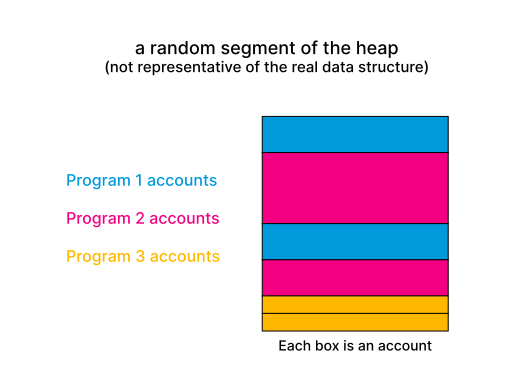
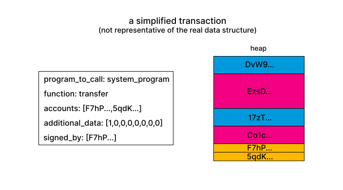
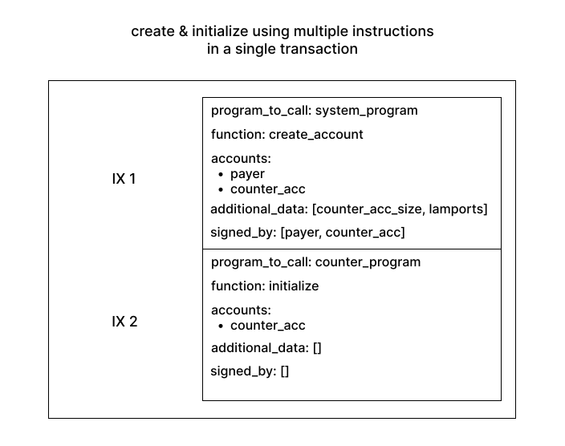

Introduction
Welcome to The Anchor Book! ⚓
This chapter covers what anchor is, how its documentation is structured, and what you should know to have a good time with this guide.
If you find errors or something doesn't work, please report it here.
What is Anchor
Anchor is a framework for quickly building secure Solana programs.
With Anchor you can build programs quickly because it writes various boilerplate for you such as (de)serialization of accounts and instruction data.
You can build secure programs more easily because Anchor handles certain security checks for you. On top of that, it allows you to succinctly define additional checks and keep them separate from your business logic.
Both of these aspects mean that instead of working on the tedious parts of raw Solana programs, you can spend more time working on what matters most, your product.
Anchor Documentation
Anchor's official documentation is split up into multiple parts, namely the guide, which is what you are reading right now and the references.
There are three references. One for the core library and one for each official client library (typescript and rust). These references are close to the code and detailed. If you know what you are looking for and want to understand how it works more deeply, you'll find explanations there.
However, if you're new to anchor, you need to know what anchor has to offer before you can even try to understand it more deeply. That's what this guide is for. Its purpose is to introduce you to anchor, to help you become familiar with it. It teaches you what features are available in Anchor so you can explore them yourself in detail using the references.
Prerequisites
This chapter provides you with the necessary background knowledge to get started with anchor.
Useful Resources
Rust
This guide assumes that you already have some knowledge of basic Rust. We recommend reading chapters 1-9 of the Rust book which cover the basics of using Rust (Most of the time you don't need advanced Rust to write anchor programs).
Solana
The next chapter explains some of the basic concepts required to make it through this book. That said, our intro chapter currently only briefly covers the basics, so we also recommend checking out the official Solana developers page.
Intro to Programming on Solana
This is a brief intro to programming on Solana that explains the most important topics. It aims to provide everything you need to understand the following chapters in the book.
Memory on Solana
On a high level, memory inside a Solana cluster can be thought of as a monolithic heap of data. Smart contracts on Solana ("programs" in Solana jargon) each have access to their own part of that heap.
While a program may read any part of the global heap, if a program tries to write to a part of the heap that is not theirs, the Solana runtime makes the transaction fail (there is one exception to this which is increasing the balance of an account).
All state lives in this heap. Your SOL accounts, smart contracts, and memory used by smart contracts. And each memory region has a program that manages it (sometimes called the “owner”). The solana term for a memory region is "account". Some programs own thousands of independent accounts. As shown in the figure, these accounts (even when owned by the same program) do not have to be equal in size.

Since all state lives in the heap, even programs themselves live there. Accounts that store programs are owned by the BPFLoader. This is a program that can be used to deploy and upgrade other programs. The BPFLoader is owned by the Native Loader and that is where the recursion ends.
Transactions and Accounts
You can make a program read and write data by sending transactions. Programs provide endpoints that can be called via transactions (In reality it's a bit more complex than that but frameworks like Anchor abstract away this complexity). A function signature usually takes the following arguments:
- the accounts that the program may read from and write to during this transaction.
- additional data specific to the function
The first point means that even if in theory the program may read and write to a large part of the global heap, in the context of a transaction, it may only read from and write to the specific regions specified in the arguments of the transaction.
This design is partly responsible for Solana’s high throughput. The runtime can look at all the incoming transactions of a program (and even across programs) and can check whether the memory regions in the first argument of the transactions overlap. If they don’t, the runtime can run these transactions in parallel because they don’t conflict with each other. Even better, if the runtime sees that two transactions access overlapping memory regions but only read and don’t write, it can also parallelize those transactions because they do not conflict with each other.
How exactly can a transaction specify a memory region/account? To answer that, we need to look deeper into what properties an account has (docs here. This is the data structure for an account in a transaction. The is_signer and is_writable fields are set per transaction (e.g. is_signed is set if the corresponding private key of the account's key field signed the transaction) and are not part of the metadata that is saved in the heap). In front of the user data that the account can store (in the data field) , there is some metadata connected to each account. First, it has a key property which is a ed25519 public key and serves as the address of the account. This is how the transaction can specify which accounts the program may access in the transaction.

An account also has a lamports field (a lamport is SOL’s smallest unit). Since all state lives in the heap, normal SOL accounts are on the heap too. They're accounts with a data field of length 0 (they still have metadata though!) and some amount of lamports. The System Program owns all regular SOL accounts.
Rent
Because validators don’t have infinite storage and providing storage costs money, accounts need to pay rent for their existence. This rent is subtracted from their lamports regularly. However, if an account's lamports balance is above the rent-exemption threshold, it is rent-exempt and does not lose its lamports. This threshold depends on the size of the account. In 99% of cases, you will create rent-exempt accounts. It's even being considered to disable non-rent-exempt accounts.
Program Example: The System Program
Let’s now look at an example of a program: The System Program. The System Program is a smart contract with some additional privileges.
All "normal" SOL accounts are owned by the System Program. One of the system program’s responsibilities is handling transfers between the accounts it owns. This is worth repeating: Even normal SOL transfers on Solana are handled by a smart contract.
To provide transfer functionality, the system program has a “transfer” endpoint. This endpoint takes 2 accounts - from and to - and a “lamports” argument. The system program checks whether from signed the transaction via the is_signer field on the from account. The runtime will set this flag to true if the private key of the keypair that the account’s public key belongs to signed the transaction. If “from” signed the transaction, the system program removes lamports from from’s account and adds them to to’s account.
/// simplified system program code
fn transfer(accounts, lamports) {
if !accounts.from.is_signer {
error();
}
accounts.from.lamports -= lamports;
accounts.to.lamports += lamports;
}
Take a moment to guess would happen if the user passed in a from account that was not owned by the system program!
...
...
The transaction would fail! A program may not write to any accounts that it doesn't own. There's one exception to this rule though.
If the to account was owned by a different program, the transaction would still succeed. This is because programs may increase the lamports of an account even if they do not own it.
Next to transferring lamports, the system program is used to create accounts for other programs. An account is created with a specific size and a specific amount of lamports. Let's now look at program composition to see how creating accounts works in practice.
Program Composition
There are two ways for developers to make programs interact with each other. To explain these, we'll use a common flow on Solana: Create & Initialize.
Consider a counter program with two endpoints. One to initialize the counter and one to increment it. To create a new counter, we call the system program's create_account to create the account in memory and then the counter's initialize function.
Program Composition via multiple instructions in a transaction
The first way to create and initialize the counter is by using multiple instructions in a transaction.
While a transaction can be used to execute a single call to a program like it was done above with transfer,
a single transaction can also include multiple calls to different programs.

If we went with this approach, our counter data structure would look like this:
#![allow(unused)] fn main() { pub struct Counter { pub count: u64, pub is_initialized: bool } }
and our initialize function would look like this:
/// pseudo code
fn initialize(accounts) {
let counter = deserialize(accounts.counter);
if counter.is_initialized {
error("already initialized");
}
counter.count = 0;
counter.is_initialized = true;
}
This approach could also be called the "implicit" approach. This is because the programs do not explicitly communicate with each other. They are glued together by the user on the client side.
This also means that the counter needs to have an is_initialized variable so initialize can only be called once per counter account.
Program Composition via Cross-Program Invocations
Cross-Program Invocations (CPIs) are the explicit tool to compose programs. A CPI is a direct call from one program into another within the same instruction.
Using CPIs the create & initialize flow can be executed inside the initialize function of the counter:
/// pseudo code
fn initialize(accounts) {
accounts.system_program.create_account(accounts.payer, accounts.counter);
let counter = deserialize(accounts.counter);
counter.count = 0;
}
In this example, no is_initialized is needed. This is because the CPI to the system program will fail if the counter exists already.
Anchor recommends CPIs to create and initialize accounts when possible (Accounts that are created by CPI can only be created with a maximum size of 10 kibibytes. This is large enough for most use cases though.). This is because creating an account inside your own instruction means that you can be certain about its properties. Any account that you don't create yourself is passed in by some other program or user that cannot be trusted. This brings us to the next section.
Validating Inputs
On Solana it is crucial to validate program inputs. Clients pass accounts and program inputs to programs which means that malicious clients can pass malicious accounts and inputs. Programs need to be written in a way that handles those malicious inputs.
Consider the transfer function in the system program for example. It checks that from has signed the transaction.
/// simplified system program code
fn transfer(accounts, lamports) {
if !accounts.from.is_signer {
error();
}
accounts.from.lamports -= lamports;
accounts.to.lamports += lamports;
}
If it didn't do that, anyone could call the endpoint with your account and make the system program transfer the lamports from your account into theirs.
The book will eventually have a chapter explaining all the different types of attacks and how anchor prevents them but for now here's one more example. Consider the counter program from earlier. Now imagine that next to the counter struct, there's another struct that is a singleton which is used to count how many counters there are.
struct CounterCounter {
count: u64
}
Every time a new counter is created, the count variable of the counter counter should be incremented by one.
Consider the following increment instruction that increases the value of a counter account:
/// pseudo code
fn increment(accounts) {
let counter = deserialize(accounts.counter);
counter.count += 1;
}
This function is insecure. But why? It's not possible to pass in an account owned by a different program because the function writes to the account so the runtime would make the transaction fail. But it is possible to pass in the counter counter singleton account because both the counter and the counter counter struct have the same structure (they're a rust struct with a single u64 variable). This would then increase the counter counter's count and it would no longer track how many counters there are.
The fix is simple:
/// pseudo code
// a better approach than hardcoding the address is using a PDA.
// We will cover those later in the book.
let HARDCODED_COUNTER_COUNTER_ADDRESS = SOME_ADDRESS;
fn increment(accounts) {
if accounts.counter.key == HARDCODED_COUNTER_COUNTER_ADDRESS {
error("Wrong account type");
}
let counter = deserialize(accounts.counter);
counter.count += 1;
}
There are many types of attacks possible on Solana that all revolve around passing in one account where another was expected but it wasn't checked that the actual one is really the expected one. This brings us from Solana to Anchor. A big part of Anchor's raison d'être is making input validation easier or even doing it for you when possible (e.g. with idiomatic anchor, this account type confusion cannot happen thanks to anchor's discriminator which we'll cover later in the book).
Let's dive in.
Getting Started
This chapter walks you through the installation process and the folder structure of an anchor workspace.
Installation
Rust
Go here to install Rust.
Solana
Go here to install Solana and then run solana-keygen new to create a keypair at the default location. Anchor uses this keypair to run your program tests.
Yarn
Go here to install Yarn.
Anchor
Installing using Anchor version manager (avm) (recommended)
Anchor version manager is a tool for using multiple versions of the anchor-cli. It will require the same dependencies as building from source. It is recommended you uninstall the NPM package if you have it installed.
Install avm using Cargo. Note this will replace your anchor binary if you had one installed.
cargo install --git https://github.com/coral-xyz/anchor avm --locked --force
On Linux systems you may need to install additional dependencies if cargo install fails. E.g. on Ubuntu:
sudo apt-get update && sudo apt-get upgrade && sudo apt-get install -y pkg-config build-essential libudev-dev
Install the latest version of the CLI using avm, and then set it to be the version to use.
avm install latest
avm use latest
Verify the installation.
anchor --version
Install using pre-build binary on x86_64 Linux
Anchor binaries are available via an NPM package @coral-xyz/anchor-cli. Only x86_64 Linux is supported currently, you must build from source for other OS'.
Build from source for other operating systems without avm
We can also use Cargo to install the CLI directly. Make sure that the --tag argument uses the version you want (the version here is just an example).
cargo install --git https://github.com/coral-xyz/anchor --tag v0.29.0 anchor-cli --locked
On Linux systems you may need to install additional dependencies if cargo install fails. On Ubuntu,
sudo apt-get update && sudo apt-get upgrade && sudo apt-get install -y pkg-config build-essential libudev-dev
Now verify the CLI is installed properly.
anchor --version
Hello, Anchor!
To initialize a new project, simply run:
anchor init <new-workspace-name>
This creates a new anchor workspace you can move into. The following are some of the important files in the folder:
- The
.anchorfolder: It includes the most recent program logs and a local ledger that is used for testing - The
appfolder: An empty folder that you can use to hold your frontend if you use a monorepo - The
programsfolder: This folder contains your programs. It can contain multiple but initially only contains a program with the same name as<new-workspace-name>. This program already contains alib.rsfile with some sample code. - The
testsfolder: The folder that contains your E2E tests. It will already include a file that tests the sample code in theprograms/<new-workspace-name>. - The
migrationsfolder: In this folder you can save your deploy and migration scripts for your programs. - The
Anchor.tomlfile: This file configures workspace wide settings for your programs. Initially, it configures- The addresses of your programs on localnet (
[programs.localnet]) - A registry your program can be pushed to (
[registry]) - A provider which can be used in your tests (
[provider]) - Scripts that Anchor executes for you (
[scripts]). Thetestscript is run when runninganchor test. You can run your own scripts withanchor run <script_name>.
- The addresses of your programs on localnet (
Anchor Programs In-Depth
This section explains how you can use Anchor to build Solana programs. Each section includes code examples, so it is recommended that you start up a new Anchor project before you proceed so you can play around with the code yourself while reading. Call it hello-anchor.
anchor init hello-anchor
This section begins with the essentials and then explains more intermediate content afterwards.
Essentials
This chapter teaches you Anchor essentials and includes a milestone project with which you can test your understanding.
High-level Overview
An Anchor program consists of three parts. The program module, the Accounts structs which are marked with #[derive(Accounts)], and the declare_id macro. The program module is where you write your business logic. The Accounts structs is where you validate accounts. Thedeclare_id macro creates an ID field that stores the address of your program. Anchor uses this hardcoded ID for security checks and it also allows other crates to access your program's address.
When you start up a new Anchor project, you'll see the following:
// use this import to gain access to common anchor features
use anchor_lang::prelude::*;
// declare an id for your program
declare_id!("Fg6PaFpoGXkYsidMpWTK6W2BeZ7FEfcYkg476zPFsLnS");
// write your business logic here
#[program]
mod hello_anchor {
use super::*;
pub fn initialize(_ctx: Context<Initialize>) -> Result<()> {
Ok(())
}
}
// validate incoming accounts here
#[derive(Accounts)]
pub struct Initialize {}
We'll go into more detail in the next sections but for now, note that the way an endpoint is connected to its corresponding Accounts struct is the ctx argument in the endpoint. The argument is of type Context which is generic over an Accounts struct, i.e. this is where you put the name of your account validation struct. In this example, it's Initialize.
The Accounts Struct
The Accounts struct is where you define which accounts your instruction expects and which constraints these accounts should adhere to. You do this via two constructs: Types and constraints.
Types
Each type has a specific use case in mind. Detailed explanations for the types can be found in the reference. We will briefly explain the most important type here, the Account type.
The Account Type
The Account type is used when an instruction is interested in the deserialized data of the account. Consider the following example where we set some data in an account:
use anchor_lang::prelude::*;
declare_id!("Fg6PaFpoGXkYsidMpWTK6W2BeZ7FEfcYkg476zPFsLnS");
#[program]
mod hello_anchor {
use super::*;
pub fn set_data(ctx: Context<SetData>, data: u64) -> Result<()> {
ctx.accounts.my_account.data = data;
Ok(())
}
}
#[account]
#[derive(Default)]
pub struct MyAccount {
data: u64
}
#[derive(Accounts)]
pub struct SetData<'info> {
#[account(mut)]
pub my_account: Account<'info, MyAccount>
}
Account is generic over T. This T is a type you can create yourself to store data. In this example, we have created a struct MyAccount with a single data field to store a u64. Account requires T to implement certain functions (e.g. functions that (de)serialize T). Most of the time, you can use the #[account] attribute to add these functions to your data, as is done in the example.
Most importantly, the #[account] attribute sets the owner of that data to the ID (the one we created earlier with declare_id) of the crate #[account] is used in. The Account type can then check for you that the AccountInfo passed into your instruction has its owner field set to the correct program. In this example, MyAccount is declared in our own crate so Account will verify that the owner of my_account equals the address we declared with declare_id.
Using Account<'a, T> with non-anchor program accounts
There may be cases where you want your program to interact with a non-Anchor program. You can still get all the benefits of Account but you have to write a custom wrapper type instead of using #[account]. For instance, Anchor provides wrapper types for the token program accounts so they can be used with Account.
use anchor_lang::prelude::*;
use anchor_spl::token::TokenAccount;
declare_id!("Fg6PaFpoGXkYsidMpWTK6W2BeZ7FEfcYkg476zPFsLnS");
#[program]
mod hello_anchor {
use super::*;
pub fn set_data(ctx: Context<SetData>, data: u64) -> Result<()> {
if ctx.accounts.token_account.amount > 0 {
ctx.accounts.my_account.data = data;
}
Ok(())
}
}
#[account]
#[derive(Default)]
pub struct MyAccount {
data: u64,
mint: Pubkey
}
#[derive(Accounts)]
pub struct SetData<'info> {
#[account(mut)]
pub my_account: Account<'info, MyAccount>,
#[account(
constraint = my_account.mint == token_account.mint,
has_one = owner
)]
pub token_account: Account<'info, TokenAccount>,
pub owner: Signer<'info>
}
To run this example, add anchor-spl = "<version>" to the dependencies section in your Cargo.toml, located in the programs/<your-project-name>/ directory. <version> should be equal to the anchor-lang version you're using.
In this example, we set the data field of an account if the caller has admin rights. We decide whether the caller is an admin by checking whether they own admin tokens for the account they want to change. We do most of this via constraints which we will look at in the next section.
The important thing to take away is that we use the TokenAccount type (that wraps around the token program's Account struct and adds the required functions) to make anchor ensure that the incoming account is owned by the token program and to make anchor deserialize it. This means we can use the TokenAccount properties inside our constraints (e.g. token_account.mint) as well as in the instruction function.
Check out the reference for the Account type to learn how to implement your own wrapper types for non-anchor programs.
Constraints
Account types can do a lot of work for you but they're not dynamic enough to handle all the security checks a secure program requires.
Add constraints to an account with the following format:
#[account(<constraints>)]
pub account: AccountType
Some constraints support custom Errors (we will explore errors later):
#[account(...,<constraint> @ MyError::MyErrorVariant, ...)]
pub account: AccountType
For example, in the examples above, we used the mut constraint to indicate that my_account should be mutable. We used has_one to check that token_account.owner == owner.key(). And finally we used constraint to check an arbitrary expression; in this case, whether the incoming TokenAccount belongs to the admin mint.
#[derive(Accounts)]
pub struct SetData<'info> {
#[account(mut)]
pub my_account: Account<'info, MyAccount>,
#[account(
constraint = my_account.mint == token_account.mint,
has_one = owner
)]
pub token_account: Account<'info, TokenAccount>,
pub owner: Signer<'info>
}
You can find information about all constraints in the reference. We will cover some of the most important ones in the milestone project at the end of the Essentials section.
Safety checks
Two of the Anchor account types, AccountInfo and UncheckedAccount do not implement any checks on the account being passed. Anchor implements safety checks that encourage additional documentation describing why additional checks are not necessary.
Attempting to build a program containing the following excerpt with anchor build:
#[derive(Accounts)]
pub struct Initialize<'info> {
pub potentially_dangerous: UncheckedAccount<'info>
}
will result in an error similar to the following:
Error:
/anchor/tests/unchecked/programs/unchecked/src/lib.rs:15:8
Struct field "potentially_dangerous" is unsafe, but is not documented.
Please add a `/// CHECK:` doc comment explaining why no checks through types are necessary.
See https://book.anchor-lang.com/anchor_in_depth/the_accounts_struct.html#safety-checks for more information.
To fix this, write a doc comment describing the potential security implications, e.g.:
#[derive(Accounts)]
pub struct Initialize<'info> {
/// CHECK: This is not dangerous because we don't read or write from this account
pub potentially_dangerous: UncheckedAccount<'info>
}
Note the doc comment needs to be a line or block doc comment (/// or /**) to be interpreted as doc attribute by Rust. Double slash comments (//) are not interpreted as such.
The Program Module
The program module is where you define your business logic. You do so by writing functions which can be called by clients or other programs. You've already seen one example of such a function, the set_data function from the previous section.
#[program]
mod hello_anchor {
use super::*;
pub fn set_data(ctx: Context<SetData>, data: u64) -> Result<()> {
if ctx.accounts.token_account.amount > 0 {
ctx.accounts.my_account.data = data;
}
Ok(())
}
}
Context
Each endpoint function takes a Context type as its first argument. Through this context argument it can access the accounts (ctx.accounts), the program id (ctx.program_id) of the executing program, and the remaining accounts (ctx.remaining_accounts). remaining_accounts is a vector that contains all accounts that were passed into the instruction but are not declared in the Accounts struct. This is useful when you want your function to handle a variable amount of accounts, e.g. when initializing a game with a variable number of players.
Instruction Data
If your function requires instruction data, you can add it by adding arguments to the function after the context argument. Anchor will then automatically deserialize the instruction data into the arguments. You can have as many as you like. You can even pass in your own types as long as you use#[derive(AnchorDeserialize)] on them or implement AnchorDeserialize for them yourself. Here's an example with a custom type used as an instruction data arg:
...
#[program]
mod hello_anchor {
use super::*;
pub fn set_data(ctx: Context<SetData>, data: Data) -> Result<()> {
ctx.accounts.my_account.data = data.data;
ctx.accounts.my_account.age = data.age;
Ok(())
}
}
#[account]
#[derive(Default)]
pub struct MyAccount {
pub data: u64,
pub age: u8
}
#[derive(AnchorSerialize, AnchorDeserialize, Eq, PartialEq, Clone, Copy, Debug)]
pub struct Data {
pub data: u64,
pub age: u8
}
...
Conveniently, #[account] implements Anchor(De)Serialize for MyAccount, so the example above can be simplified.
...
#[program]
mod hello_anchor {
use super::*;
pub fn set_data(ctx: Context<SetData>, data: MyAccount) -> Result<()> {
ctx.accounts.my_account.set_inner(data);
Ok(())
}
}
#[account]
#[derive(Default)]
pub struct MyAccount {
pub data: u64,
pub age: u8
}
...
Errors
There are two types of errors in anchor programs. AnchorErrors and non-anchor errors. AnchorErrors can be divided into Anchor Internal Errors that the framework returns from inside its own code or custom errors which the user (you!) can return.
- AnchorErrors
- Anchor Internal Errors
- Custom Errors
- Non-anchor errors.
AnchorErrors provide a range of information like the error name and number or the location in the code where the error was thrown, or the account that violated a constraint (e.g. a mut constraint). Once thrown inside the program, you can access the error information in the anchor clients like the typescript client. The typescript client also enriches the error with additional information about which program the error was thrown in and the CPI calls (which are explained here in the book) that led to the program from which the error was thrown from. The milestone chapter explores how all of this works together in practice. For now, let's look at how different errors can be returned from inside a program.
Anchor Internal Errors
Anchor has many different internal error codes. These are not meant to be used by users, but it's useful to study the reference to learn about the mappings between codes and their causes. They are, for example, thrown when a constraint has been violated, e.g. when an account is marked with mut but its is_writable property is false.
Custom Errors
You can add errors that are unique to your program by using the error_code attribute.
Simply add it to an enum with a name of your choice. You can then use the variants of the enum as errors in your program. Additionally, you can add a message attribute to the individual variants. Clients will then display this error message if the error occurs. Custom Error code numbers start at the custom error offset.
To actually throw an error use the err! or the error! macro. These add file and line information to the error that is then logged by anchor.
#[program]
mod hello_anchor {
use super::*;
pub fn set_data(ctx: Context<SetData>, data: MyAccount) -> Result<()> {
if data.data >= 100 {
return err!(MyError::DataTooLarge);
}
ctx.accounts.my_account.set_inner(data);
Ok(())
}
}
#[error_code]
pub enum MyError {
#[msg("MyAccount may only hold data below 100")]
DataTooLarge
}
require!
You can use the require macro to simplify writing errors. The code above can be simplified to this (Note that the >= flips to <):
#[program]
mod hello_anchor {
use super::*;
pub fn set_data(ctx: Context<SetData>, data: MyAccount) -> Result<()> {
require!(data.data < 100, MyError::DataTooLarge);
ctx.accounts.my_account.set_inner(data);
Ok(())
}
}
#[error_code]
pub enum MyError {
#[msg("MyAccount may only hold data below 100")]
DataTooLarge
}
There are a couple of require macros to choose from (search for require in the docs). When comparing public keys, it's important to use the keys variants of the require statements like require_keys_eq instead of require_eq because comparing public keys with require_eq is very expensive.
(Ultimately, all programs return the same Error: The
ProgramError. This Error has a field for a custom error number. This is where Anchor puts its internal and custom error codes. However, this is just a single number and a single number is only so useful. So in addition, in the case of AnchorErrors, Anchor logs the returned AnchorError and the Anchor clients parse these logs to provide as much information as possible. This is not always possible. For example, there is currently no easy way to get the logs of aprocessedtransaction with preflight checks turned off. In addition, non-anchor or old anchor programs might not log AnchorErrors. In these cases, Anchor will fall back to checking whether the returned error number by the transaction matches an error number defined in theIDLor an Anchor internal error code. If so, Anchor will at least enrich the error with the error message. Also, if there are logs available, Anchor will always try to parse the program error stack and return that so you know which program the error was returned from.
Milestone Project - Tic-Tac-Toe
You're now ready to build your first anchor project. Create a new anchor workspace with
anchor init tic-tac-toe
The program will have 2 instructions. First, we need to setup the game. We need to save who is playing it and create a board to play on. Then, the players take turns until there is a winner or a tie.
We recommend keeping programs in a single lib.rs file until they get too big. We would not split up this project into multiple files either but there is a section at the end of this chapter that explains how to do it for this and other programs.
Setting up the game
State
Let's begin by thinking about what data we should store. Each game has players, turns, a board, and a game state. This game state describes whether the game is active, tied, or one of the two players won. We can save all this data in an account. This means that each new game will have its own account. Add the following to the bottom of the lib.rs file:
#[account]
pub struct Game {
players: [Pubkey; 2], // (32 * 2)
turn: u8, // 1
board: [[Option<Sign>; 3]; 3], // 9 * (1 + 1) = 18
state: GameState, // 32 + 1
}
This is the game account. Next to the field definitions, you can see how many bytes each field requires. This will be very important later. Let's also add the Sign and the GameState type.
#[derive(AnchorSerialize, AnchorDeserialize, Clone, PartialEq, Eq)]
pub enum GameState {
Active,
Tie,
Won { winner: Pubkey },
}
#[derive(
AnchorSerialize,
AnchorDeserialize,
FromPrimitive,
ToPrimitive,
Copy,
Clone,
PartialEq,
Eq
)]
pub enum Sign {
X,
O,
}
Both GameState and Sign derive some traits. AnchorSerialize and AnchorDeserialize are the crucial ones. All types that are used in types that are marked with #[account] must implement these two traits (or be marked with #[account] themselves). All other traits are important to our game logic and we are going to use them later. Generally, it is good practice to derive even more traits to make the life of others trying to interface with your program easier (see Rust's API guidelines) but for brevity's sake, we are not going to do that in this guide.
This won't quite work yet because FromPrimitive and ToPrimitive are unknown. Go to the Cargo.toml file right outside src (not the one at the root of the workspace) and add these two dependencies:
num-traits = "0.2"
num-derive = "0.3"
Then, import them at the top of lib.rs:
use num_derive::*;
use num_traits::*;
Now add the game logic:
impl Game {
pub const MAXIMUM_SIZE: usize = (32 * 2) + 1 + (9 * (1 + 1)) + (32 + 1);
pub fn start(&mut self, players: [Pubkey; 2]) -> Result<()> {
require_eq!(self.turn, 0, TicTacToeError::GameAlreadyStarted);
self.players = players;
self.turn = 1;
Ok(())
}
pub fn is_active(&self) -> bool {
self.state == GameState::Active
}
fn current_player_index(&self) -> usize {
((self.turn - 1) % 2) as usize
}
pub fn current_player(&self) -> Pubkey {
self.players[self.current_player_index()]
}
pub fn play(&mut self, tile: &Tile) -> Result<()> {
require!(self.is_active(), TicTacToeError::GameAlreadyOver);
match tile {
tile @ Tile {
row: 0..=2,
column: 0..=2,
} => match self.board[tile.row as usize][tile.column as usize] {
Some(_) => return Err(TicTacToeError::TileAlreadySet.into()),
None => {
self.board[tile.row as usize][tile.column as usize] =
Some(Sign::from_usize(self.current_player_index()).unwrap());
}
},
_ => return Err(TicTacToeError::TileOutOfBounds.into()),
}
self.update_state();
if GameState::Active == self.state {
self.turn += 1;
}
Ok(())
}
fn is_winning_trio(&self, trio: [(usize, usize); 3]) -> bool {
let [first, second, third] = trio;
self.board[first.0][first.1].is_some()
&& self.board[first.0][first.1] == self.board[second.0][second.1]
&& self.board[first.0][first.1] == self.board[third.0][third.1]
}
fn update_state(&mut self) {
for i in 0..=2 {
// three of the same in one row
if self.is_winning_trio([(i, 0), (i, 1), (i, 2)]) {
self.state = GameState::Won {
winner: self.current_player(),
};
return;
}
// three of the same in one column
if self.is_winning_trio([(0, i), (1, i), (2, i)]) {
self.state = GameState::Won {
winner: self.current_player(),
};
return;
}
}
// three of the same in one diagonal
if self.is_winning_trio([(0, 0), (1, 1), (2, 2)])
|| self.is_winning_trio([(0, 2), (1, 1), (2, 0)])
{
self.state = GameState::Won {
winner: self.current_player(),
};
return;
}
// reaching this code means the game has not been won,
// so if there are unfilled tiles left, it's still active
for row in 0..=2 {
for column in 0..=2 {
if self.board[row][column].is_none() {
return;
}
}
}
// game has not been won
// game has no more free tiles
// -> game ends in a tie
self.state = GameState::Tie;
}
}
We are not going to explore this code in detail together because it's rather simple rust code. It's just tic-tac-toe after all! Roughly, what happens when play is called:
- Return error if game is over or return error if given row or column are outside the 3x3 board or return error if tile on board is already set
- Determine current player and set tile to X or O
- Update game state
- If game is still active, increase the turn
Currently, the code doesn't compile because we need to add the Tile
#[derive(AnchorSerialize, AnchorDeserialize)]
pub struct Tile {
row: u8,
column: u8,
}
and the TicTacToeError type.
#[error_code]
pub enum TicTacToeError {
TileOutOfBounds,
TileAlreadySet,
GameAlreadyOver,
NotPlayersTurn,
GameAlreadyStarted
}
The Setup Instruction
Before we write any game logic, we can add the instruction that will set up the game in its initial state. Rename the already existing instruction function and accounts struct to setup_game and SetupGame respectively. Now think about which accounts are needed to set up the game. Clearly, we need the game account. Before we can fill it with values, we need to create it. For that, we use the init constraint.
#[derive(Accounts)]
pub struct SetupGame<'info> {
#[account(init)]
pub game: Account<'info, Game>
}
init immediately shouts at us and tells us to add a payer. Why do we need it? Because init creates rent-exempt accounts and someone has to pay for that. Naturally, if we want to take money from someone, we should make them sign as well as mark their account as mutable.
#[derive(Accounts)]
pub struct SetupGame<'info> {
#[account(init, payer = player_one)]
pub game: Account<'info, Game>,
#[account(mut)]
pub player_one: Signer<'info>
}
init is not happy yet. It wants the system program to be inside the struct because init creates the game account by making a call to that program. So let's add it.
#[derive(Accounts)]
pub struct SetupGame<'info> {
#[account(init, payer = player_one)]
pub game: Account<'info, Game>,
#[account(mut)]
pub player_one: Signer<'info>,
pub system_program: Program<'info, System>
}
There's one more thing to do to complete SetupGame. Every account is created with a fixed amount of space, so we have to add this space to the instruction as well. This is what the comments next to the Game struct indicated.
#[derive(Accounts)]
pub struct SetupGame<'info> {
#[account(init, payer = player_one, space = 8 + Game::MAXIMUM_SIZE)]
pub game: Account<'info, Game>,
#[account(mut)]
pub player_one: Signer<'info>,
pub system_program: Program<'info, System>
}
Let us briefly explain how we arrived at the Game::MAXIMUM_SIZE. Anchor uses the borsh specification to (de)serialize its state accounts.
- Pubkey has a length of
32bytes so2*32 = 64 - u8 as a vector has a length of
1 - the
boardhas a length of (9 * (1 + 1)). We know the board has 9 tiles (->9) of typeOptionwhich borsh serializes with 1 byte (set to1for Some and0for None) plus the size of whatever's in theOption. In this case, it's a simple enum with types that don't hold more types so the maximum size of the enum is also just1(for its discriminant). In total that means we get9 (tiles) * (1 (Option) + 1(Sign discriminant)). stateis also an enum so we need1byte for the discriminant. We have to init the account with the maximum size and the maximum size of an enum is the size of its biggest variant. In this case that's thewinnervariant which holds a Pubkey. A Pubkey is32bytes long so the size ofstateis1 (discriminant) + 32 (winner pubkey)(MAXIMUM_SIZEis aconstvariable so specifying it in terms of a sum of the sizes ofGame's members' fields does not incur any runtime cost).
In addition to the game's size, we have to add another 8 to the space. This is space for the internal discriminator which anchor sets automatically. In short, the discriminator is how anchor can differentiate between different accounts of the same program. For more information, check out the Anchor space reference.
(What about using
mem::size_of<Game>()? This almost works but not quite. The issue is that borsh will always serialize an option as 1 byte for the variant identifier and then additional x bytes for the content if it's Some. Rust uses null-pointer optimization to make Option's variant identifier 0 bytes when it can, so an option is sometimes just as big as its contents. This is the case withSign. This means theMAXIMUM_SIZEcould also be expressed asmem::size_of<Game>() + 9.)
And with this, SetupGame is complete and we can move on to the setup_game function. (If you like playing detective, you can pause here and try to figure out why what we just did will not work. Hint: Have a look at the specification of the serialization library Anchor uses. If you cannot figure it out, don't worry. We are going to fix it very soon, together.)
Let's start by adding an argument to the setup_game function.
pub fn setup_game(ctx: Context<SetupGame>, player_two: Pubkey) -> Result<()> {
}
Why didn't we just add player_two as an account in the accounts struct? There are two reasons for this. First, adding it there requires a little more space in the transaction that saves whether the account is writable and whether it's a signer. But we care about neither the mutability of the account nor whether it's a signer. We just need its address. This brings us to the second and more important reason: Simultaneous network transactions can affect each other if they share the same accounts. For example, if we add player_two to the accounts struct, during our transaction, no other transaction can edit player_two's account. Therefore, we block all other transactions that want to edit player_two's account, even though we neither want to read from nor write to the account. We just care about its address!
Finish the instruction function by setting the game to its initial values:
pub fn setup_game(ctx: Context<SetupGame>, player_two: Pubkey) -> Result<()> {
ctx.accounts.game.start([ctx.accounts.player_one.key(), player_two])
}
Now, run anchor build. On top of compiling your program, this command creates an IDL for your program. You can find it in target/idl. The anchor typescript client can automatically parse this IDL and generate functions based on it. What this means is that each anchor program gets its own typescript client for free! (Technically, you don't have to call anchor build before testing. anchor test will do it for you.)
Testing the Setup Instruction
Time to test our code! Head over into the tests folder in the root directory. Open the tic-tac-toe.ts file and remove the existing it test. Then, put the following into the describe section:
it("setup game!", async () => {
const gameKeypair = anchor.web3.Keypair.generate();
const playerOne = (program.provider as anchor.AnchorProvider).wallet;
const playerTwo = anchor.web3.Keypair.generate();
await program.methods
.setupGame(playerTwo.publicKey)
.accounts({
game: gameKeypair.publicKey,
playerOne: playerOne.publicKey,
})
.signers([gameKeypair])
.rpc();
let gameState = await program.account.game.fetch(gameKeypair.publicKey);
expect(gameState.turn).to.equal(1);
expect(gameState.players).to.eql([playerOne.publicKey, playerTwo.publicKey]);
expect(gameState.state).to.eql({ active: {} });
expect(gameState.board).to.eql([
[null, null, null],
[null, null, null],
[null, null, null],
]);
});
and add this to the top of your file:
import { expect } from "chai";
When you adjust your test files it may happen that you'll see errors everywhere. This is likely because the test file is looking for types from your program that haven't been generated yet. To generate them, run
anchor build. This builds the program and creates the idl and typescript types.
The test begins by creating some keypairs. Importantly, playerOne is not a keypair but the wallet of the program's provider. The provider details are defined in the Anchor.toml file in the root of the project. The provider serves as the keypair that pays for (and therefore signs) all transactions.
Then, we send the transaction.
The structure of the transaction function is as follows: First come the instruction arguments. For this function, the public key of the second player. Then come the accounts. Lastly, we add a signers array. We have to add the gameKeypair here because whenever an account gets created, it has to sign its creation transaction. We don't have to add playerOne even though we gave it the Signer type in the program because it is the program provider and therefore signs the transaction by default.
We did not have to specify the system_program account. This is because anchor recognizes this account and is able to infer it. This is also true for other known accounts such as the token_program or the rent sysvar account.
After the transaction returns, we can fetch the state of the game account. You can fetch account state using the program.account namespace.
Finally, we verify the game has been set up properly by comparing the actual state and the expected state. To learn how Anchor maps the Rust types to the js/ts types, check out the Javascript Anchor Types Reference.
Now, run anchor test. This starts up (and subsequently shuts down) a local validator (make sure you don't have one running before) and runs your tests using the test script defined in Anchor.toml.
If you get the error
Error: Unable to read keypair filewhen running the test, you likely need to generate a Solana keypair usingsolana-keygen new.
Playing the game
The Play Instruction
The Play accounts struct is straightforward. We need the game and a player:
#[derive(Accounts)]
pub struct Play<'info> {
#[account(mut)]
pub game: Account<'info, Game>,
pub player: Signer<'info>,
}
player needs to sign or someone else could play for the player.
Finally, we can add the play function inside the program module.
pub fn play(ctx: Context<Play>, tile: Tile) -> Result<()> {
let game = &mut ctx.accounts.game;
require_keys_eq!(
game.current_player(),
ctx.accounts.player.key(),
TicTacToeError::NotPlayersTurn
);
game.play(&tile)
}
We've checked in the accounts struct that the player account has signed the transaction, but we do not check that it is the player we expect. That's what the require_keys_eq check in play is for.
Testing the Play Instruction
Testing the play instruction works the exact same way. To avoid repeating yourself, create a helper function at the top of the test file:
async function play(
program: Program<TicTacToe>,
game,
player,
tile,
expectedTurn,
expectedGameState,
expectedBoard
) {
await program.methods
.play(tile)
.accounts({
player: player.publicKey,
game,
})
.signers(player instanceof (anchor.Wallet as any) ? [] : [player])
.rpc();
const gameState = await program.account.game.fetch(game);
expect(gameState.turn).to.equal(expectedTurn);
expect(gameState.state).to.eql(expectedGameState);
expect(gameState.board).to.eql(expectedBoard);
}
You can create then a new it test, setup the game like in the previous test, but then keep calling the play function you just added to simulate a complete run of the game. Let's begin with the first turn:
it("player one wins", async () => {
const gameKeypair = anchor.web3.Keypair.generate();
const playerOne = program.provider.wallet;
const playerTwo = anchor.web3.Keypair.generate();
await program.methods
.setupGame(playerTwo.publicKey)
.accounts({
game: gameKeypair.publicKey,
playerOne: playerOne.publicKey,
})
.signers([gameKeypair])
.rpc();
let gameState = await program.account.game.fetch(gameKeypair.publicKey);
expect(gameState.turn).to.equal(1);
expect(gameState.players).to.eql([playerOne.publicKey, playerTwo.publicKey]);
expect(gameState.state).to.eql({ active: {} });
expect(gameState.board).to.eql([
[null, null, null],
[null, null, null],
[null, null, null],
]);
await play(
program,
gameKeypair.publicKey,
playerOne,
{ row: 0, column: 0 },
2,
{ active: {} },
[
[{ x: {} }, null, null],
[null, null, null],
[null, null, null],
]
);
});
and run anchor test.
You can finish writing the test by yourself (or check out the reference implementation). Try to simulate a win and a tie!
Proper testing also includes tests that try to exploit the contract. You can check whether you've protected yourself properly by calling play with unexpected parameters. You can also familiarize yourself with the returned AnchorErrors this way. For example:
try {
await play(
program,
gameKeypair.publicKey,
playerTwo,
{ row: 5, column: 1 }, // ERROR: out of bounds row
4,
{ active: {} },
[
[{ x: {} }, { x: {} }, null],
[{ o: {} }, null, null],
[null, null, null],
]
);
// we use this to make sure we definitely throw an error
chai.assert(false, "should've failed but didn't ");
} catch (_err) {
expect(_err).to.be.instanceOf(AnchorError);
const err: AnchorError = _err;
expect(err.error.errorCode.number).to.equal(6000);
}
or
try {
await play(
program,
gameKeypair.publicKey,
playerOne, // ERROR: same player in subsequent turns
// change sth about the tx because
// duplicate tx that come in too fast
// after each other may get dropped
{ row: 1, column: 0 },
2,
{ active: {} },
[
[{ x: {} }, null, null],
[null, null, null],
[null, null, null],
]
);
chai.assert(false, "should've failed but didn't ");
} catch (_err) {
expect(_err).to.be.instanceOf(AnchorError);
const err: AnchorError = _err;
expect(err.error.errorCode.code).to.equal("NotPlayersTurn");
expect(err.error.errorCode.number).to.equal(6003);
expect(err.program.equals(program.programId)).is.true;
expect(err.error.comparedValues).to.deep.equal([
playerTwo.publicKey,
playerOne.publicKey,
]);
}
Deployment
Solana has three main clusters: mainnet-beta, devnet, and testnet.
For developers, devnet and mainnet-beta are the most interesting. devnet is where you test your application in a more realistic environment than localnet. testnet is mostly for validators.
We are going to deploy on devnet.
Here is your deployment checklist 🚀
- Run
anchor build. Your program keypair is now intarget/deploy. Keep this keypair secret. You can reuse it on all clusters. - Run
anchor keys listto display the keypair's public key and copy it into yourdeclare_id!macro at the top oflib.rs. - Run
anchor buildagain. This step is necessary to include the new program id in the binary. - Change the
provider.clustervariable inAnchor.tomltodevnet. - Run
anchor deploy - Run
anchor test
There is more to deployments than this e.g. understanding how the BPFLoader works, how to manage keys, how to upgrade your programs and more. Keep reading to learn more!
Program directory organization
Eventually, some programs become too big to keep them in a single file and it makes sense to break them up.
Splitting a program into multiple files works almost the exact same way as splitting up a regular rust program, so if you haven't already, now is the time to read all about that in the rust book.
We recommend the following directory structure (using the tic-tac-toe program as an example):
.
+-- lib.rs
+-- errors.rs
+-- instructions
| +-- play.rs
| +-- setup_game.rs
| +-- mod.rs
+-- state
| +-- game.rs
| +-- mod.rs
The crucial difference to a normal rust layout is the way that instructions have to be imported. The lib.rs file has to import each instruction module with a wildcard import (e.g. use instructions::play::*;). This has to be done because the #[program] macro depends on generated code inside each instruction file.
To make the imports shorter you can re-export the instruction modules in the mod.rs file in the instructions directory with the pub use syntax and then import all instructions in the lib.rs file with use instructions::*;.
Well done! You've finished the essentials section. You can now move on to the more advanced parts of Anchor.
Intermediate
This chapter teaches you intermediate anchor concepts like PDAs and Cross-Program Invocations.
Cross-Program Invocations
Often it's useful for programs to interact with each other. In Solana this is achieved via Cross-Program Invocations (CPIs).
Consider the following example of a puppet and a puppet master. Admittedly, it is not very realistic but it allows us to show you the many nuances of CPIs. The milestone project of the intermediate section covers a more realistic program with multiple CPIs.
Setting up basic CPI functionality
Create a new workspace
anchor init puppet
and copy the following code.
use anchor_lang::prelude::*;
declare_id!("Fg6PaFpoGXkYsidMpWTK6W2BeZ7FEfcYkg476zPFsLnS");
#[program]
pub mod puppet {
use super::*;
pub fn initialize(_ctx: Context<Initialize>) -> Result<()> {
Ok(())
}
pub fn set_data(ctx: Context<SetData>, data: u64) -> Result<()> {
let puppet = &mut ctx.accounts.puppet;
puppet.data = data;
Ok(())
}
}
#[derive(Accounts)]
pub struct Initialize<'info> {
#[account(init, payer = user, space = 8 + 8)]
pub puppet: Account<'info, Data>,
#[account(mut)]
pub user: Signer<'info>,
pub system_program: Program<'info, System>,
}
#[derive(Accounts)]
pub struct SetData<'info> {
#[account(mut)]
pub puppet: Account<'info, Data>,
}
#[account]
pub struct Data {
pub data: u64,
}
There's nothing special happening here. It's a pretty simple program! The interesting part is how it interacts with the next program we are going to create.
Run
anchor new puppet-master
inside the workspace and copy the following code:
use anchor_lang::prelude::*;
use puppet::cpi::accounts::SetData;
use puppet::program::Puppet;
use puppet::{self, Data};
declare_id!("HmbTLCmaGvZhKnn1Zfa1JVnp7vkMV4DYVxPLWBVoN65L");
#[program]
mod puppet_master {
use super::*;
pub fn pull_strings(ctx: Context<PullStrings>, data: u64) -> Result<()> {
let cpi_program = ctx.accounts.puppet_program.to_account_info();
let cpi_accounts = SetData {
puppet: ctx.accounts.puppet.to_account_info(),
};
let cpi_ctx = CpiContext::new(cpi_program, cpi_accounts);
puppet::cpi::set_data(cpi_ctx, data)
}
}
#[derive(Accounts)]
pub struct PullStrings<'info> {
#[account(mut)]
pub puppet: Account<'info, Data>,
pub puppet_program: Program<'info, Puppet>,
}
Also add the line puppet_master = "HmbTLCmaGvZhKnn1Zfa1JVnp7vkMV4DYVxPLWBVoN65L" in the [programs.localnet] section of your Anchor.toml. Finally, import the puppet program into the puppet-master program by adding the following line to the [dependencies] section of the Cargo.toml file inside the puppet-master program folder:
puppet = { path = "../puppet", features = ["cpi"]}
The features = ["cpi"] is used so we can not only use puppet's types but also its instruction builders and cpi functions. Without those, we would have to use low level solana syscalls. Fortunately, anchor provides abstractions on top of those. By enabling the cpi feature, the puppet-master program gets access to the puppet::cpi module. Anchor generates this module automatically and it contains tailor-made instructions builders and cpi helpers for the program.
In the case of the puppet program, the puppet-master uses the SetData instruction builder struct provided by the puppet::cpi::accounts module to submit the accounts the SetData instruction of the puppet program expects. Then, the puppet-master creates a new cpi context and passes it to the puppet::cpi::set_data cpi function. This function has the exact same function as the set_data function in the puppet program with the exception that it expects a CpiContext instead of a Context.
Setting up a CPI can distract from the business logic of the program so it's recommended to move the CPI setup into the impl block of the instruction. The puppet-master program then looks like this:
use anchor_lang::prelude::*;
use puppet::cpi::accounts::SetData;
use puppet::program::Puppet;
use puppet::{self, Data};
declare_id!("HmbTLCmaGvZhKnn1Zfa1JVnp7vkMV4DYVxPLWBVoN65L");
#[program]
mod puppet_master {
use super::*;
pub fn pull_strings(ctx: Context<PullStrings>, data: u64) -> Result<()> {
puppet::cpi::set_data(ctx.accounts.set_data_ctx(), data)
}
}
#[derive(Accounts)]
pub struct PullStrings<'info> {
#[account(mut)]
pub puppet: Account<'info, Data>,
pub puppet_program: Program<'info, Puppet>,
}
impl<'info> PullStrings<'info> {
pub fn set_data_ctx(&self) -> CpiContext<'_, '_, '_, 'info, SetData<'info>> {
let cpi_program = self.puppet_program.to_account_info();
let cpi_accounts = SetData {
puppet: self.puppet.to_account_info()
};
CpiContext::new(cpi_program, cpi_accounts)
}
}
We can verify that everything works as expected by replacing the contents of the puppet.ts file with:
import * as anchor from "@coral-xyz/anchor";
import { Program } from "@coral-xyz/anchor";
import { Keypair } from "@solana/web3.js";
import { expect } from "chai";
import { Puppet } from "../target/types/puppet";
import { PuppetMaster } from "../target/types/puppet_master";
describe("puppet", () => {
const provider = anchor.AnchorProvider.env();
anchor.setProvider(provider);
const puppetProgram = anchor.workspace.Puppet as Program<Puppet>;
const puppetMasterProgram = anchor.workspace
.PuppetMaster as Program<PuppetMaster>;
const puppetKeypair = Keypair.generate();
it("Does CPI!", async () => {
await puppetProgram.methods
.initialize()
.accounts({
puppet: puppetKeypair.publicKey,
user: provider.wallet.publicKey,
})
.signers([puppetKeypair])
.rpc();
await puppetMasterProgram.methods
.pullStrings(new anchor.BN(42))
.accounts({
puppetProgram: puppetProgram.programId,
puppet: puppetKeypair.publicKey,
})
.rpc();
expect(
(
await puppetProgram.account.data.fetch(puppetKeypair.publicKey)
).data.toNumber()
).to.equal(42);
});
});
and running anchor test.
Privilege Extension
CPIs extend the privileges of the caller to the callee. The puppet account was passed as a mutable account to the puppet-master but it was still mutable in the puppet program as well (otherwise the expect in the test would've failed). The same applies to signatures.
If you want to prove this for yourself, add an authority field to the Data struct in the puppet program.
#[account]
pub struct Data {
pub data: u64,
pub authority: Pubkey
}
and adjust the initialize function:
pub fn initialize(ctx: Context<Initialize>, authority: Pubkey) -> Result<()> {
ctx.accounts.puppet.authority = authority;
Ok(())
}
Add 32 to the space constraint of the puppet field for the Pubkey field in the Data struct.
#[derive(Accounts)]
pub struct Initialize<'info> {
#[account(init, payer = user, space = 8 + 8 + 32)]
pub puppet: Account<'info, Data>,
#[account(mut)]
pub user: Signer<'info>,
pub system_program: Program<'info, System>,
}
Then, adjust the SetData validation struct:
#[derive(Accounts)]
pub struct SetData<'info> {
#[account(mut, has_one = authority)]
pub puppet: Account<'info, Data>,
pub authority: Signer<'info>
}
The has_one constraint checks that puppet.authority = authority.key().
The puppet-master program now also needs adjusting:
use anchor_lang::prelude::*;
use puppet::cpi::accounts::SetData;
use puppet::program::Puppet;
use puppet::{self, Data};
declare_id!("HmbTLCmaGvZhKnn1Zfa1JVnp7vkMV4DYVxPLWBVoN65L");
#[program]
mod puppet_master {
use super::*;
pub fn pull_strings(ctx: Context<PullStrings>, data: u64) -> Result<()> {
puppet::cpi::set_data(ctx.accounts.set_data_ctx(), data)
}
}
#[derive(Accounts)]
pub struct PullStrings<'info> {
#[account(mut)]
pub puppet: Account<'info, Data>,
pub puppet_program: Program<'info, Puppet>,
// Even though the puppet program already checks that authority is a signer
// using the Signer type here is still required because the anchor ts client
// can not infer signers from programs called via CPIs
pub authority: Signer<'info>
}
impl<'info> PullStrings<'info> {
pub fn set_data_ctx(&self) -> CpiContext<'_, '_, '_, 'info, SetData<'info>> {
let cpi_program = self.puppet_program.to_account_info();
let cpi_accounts = SetData {
puppet: self.puppet.to_account_info(),
authority: self.authority.to_account_info()
};
CpiContext::new(cpi_program, cpi_accounts)
}
}
Finally, change the test:
import * as anchor from "@coral-xyz/anchor";
import { Program } from "@coral-xyz/anchor";
import { Keypair } from "@solana/web3.js";
import { Puppet } from "../target/types/puppet";
import { PuppetMaster } from "../target/types/puppet_master";
import { expect } from "chai";
describe("puppet", () => {
const provider = anchor.AnchorProvider.env();
anchor.setProvider(provider);
const puppetProgram = anchor.workspace.Puppet as Program<Puppet>;
const puppetMasterProgram = anchor.workspace
.PuppetMaster as Program<PuppetMaster>;
const puppetKeypair = Keypair.generate();
const authorityKeypair = Keypair.generate();
it("Does CPI!", async () => {
await puppetProgram.methods
.initialize(authorityKeypair.publicKey)
.accounts({
puppet: puppetKeypair.publicKey,
user: provider.wallet.publicKey,
})
.signers([puppetKeypair])
.rpc();
await puppetMasterProgram.methods
.pullStrings(new anchor.BN(42))
.accounts({
puppetProgram: puppetProgram.programId,
puppet: puppetKeypair.publicKey,
authority: authorityKeypair.publicKey,
})
.signers([authorityKeypair])
.rpc();
expect(
(
await puppetProgram.account.data.fetch(puppetKeypair.publicKey)
).data.toNumber()
).to.equal(42);
});
});
The test passes because the signature that was given to the puppet-master by the authority was then extended to the puppet program which used it to check that the authority for the puppet account had signed the transaction.
Privilege extension is convenient but also dangerous. If a CPI is unintentionally made to a malicious program, this program has the same privileges as the caller. Anchor protects you from CPIs to malicious programs with two measures. First, the
Program<'info, T>type checks that the given account is the expected programT. Should you ever forget to use theProgramtype, the automatically generated cpi function (in the previous example this waspuppet::cpi::set_data) also checks that thecpi_programargument equals the expected program.
Reloading an Account
In the puppet program, the Account<'info, T> type is used for the puppet account. If a CPI edits an account of that type,
the caller's account does not change during the instruction.
You can easily see this for yourself by adding the following right after the puppet::cpi::set_data(ctx.accounts.set_data_ctx(), data) cpi call.
puppet::cpi::set_data(ctx.accounts.set_data_ctx(), data)?;
if ctx.accounts.puppet.data != 42 {
panic!();
}
Ok(())
Now your test will fail. But why? After all the test used to pass, so the cpi definitely did change the data field to 42.
The reason the data field has not been updated to 42 in the caller is that at the beginning of the instruction the Account<'info, T> type deserializes the incoming bytes into a new struct. This struct is no longer connected to the underlying data in the account. The CPI changes the data in the underlying account but since the struct in the caller has no connection to the underlying account the struct in the caller remains unchanged.
If you need to read the value of an account that has just been changed by a CPI, you can call its reload method which will re-deserialize the account. If you put ctx.accounts.puppet.reload()?; right after the cpi call, the test will pass again.
puppet::cpi::set_data(ctx.accounts.set_data_ctx(), data)?;
ctx.accounts.puppet.reload()?;
if ctx.accounts.puppet.data != 42 {
panic!();
}
Ok(())
Returning values from handler functions
The Anchor handler functions are capable of returning data using the Solana set_return_data and get_return_data syscalls. This data can be used in CPI callers and clients.
Instead of returning a Result<()>, consider this version of the set_data function from above which has been modified to return Result<u64>:
pub fn set_data(ctx: Context<SetData>, data: u64) -> Result<u64> {
let puppet = &mut ctx.accounts.puppet;
puppet.data = data;
Ok(data)
}
Defining a return type that isn't the unit type () will cause Anchor to transparently call set_return_data with the given type (u64 in this example) when this function is called. The return from the CPI call is wrapped in a struct to allow for lazy retrieval of this return data. E.g.
pub fn pull_strings(ctx: Context<PullStrings>, data: u64) -> Result<()> {
let cpi_program = ctx.accounts.puppet_program.to_account_info();
let cpi_accounts = SetData {
puppet: ctx.accounts.puppet.to_account_info(),
};
let cpi_ctx = CpiContext::new(cpi_program, cpi_accounts);
let result = puppet::cpi::set_data(cpi_ctx, data)?;
// The below statement calls sol_get_return and deserializes the result.
// `return_data` contains the return from `set_data`,
// which in this example is just `data`.
let return_data = result.get();
// ... do something with the `return_data` ...
}
Note that the type being returned must implement the AnchorSerialize and AnchorDeserialize traits, for example:
#[derive(AnchorSerialize, AnchorDeserialize)]
pub struct StructReturn {
pub value: u64,
}
Reading return data in the clients
It's even possible to use return values without CPIs. This may be useful if you're using a function to calculate a value that you need on the frontend without rewriting the code in the frontend.
Whether you're using a CPI or not, you can use the view function to read whatever was set last as return data in the transaction (view simulates the transaction and reads the Program return log).
For example:
const returnData = await program.methods
.calculate(someVariable)
.accounts({
acc: somePubkey,
anotherAcc: someOtherPubkey
})
.view();
Return Data Size Limit Workarounds
The set_return_data and get_return_data syscalls are limited to 1024 bytes so it's worth briefly explaining the old workaround for CPI return values.
By using a CPI together with reload it's possible to simulate return values. One could imagine that instead of just setting the data field to 42 the puppet program did some calculation with the 42 and saved the result in data. The puppet-master can then call reload after the cpi and use the result of the puppet program's calculation.
Programs as Signers
There's one more thing that can be done with CPIs. But for that, you need to first learn what PDAs are. We'll cover those in the next chapter.
PDAs
Knowing how to use PDAs is one of the most important skills for Solana Programming. They simplify the programming model and make programs more secure. So what are they?
PDAs (program derived addresses) are addresses with special properties.
Unlike normal addresses, PDAs are not public keys and therefore do not have an associated private key. There are two use cases for PDAs. They provide a mechanism to build hashmap-like structures on-chain and they allow programs to sign instructions.
Creation of a PDA
Before we dive into how to use PDAs in anchor, here's a short explainer on what PDAs are.
PDAs are created by hashing a number of seeds the user can choose and the id of a program:
// pseudo code
let pda = hash(seeds, program_id);
The seeds can be anything. A pubkey, a string, an array of numbers etc.
There's a 50% chance that this hash function results in a public key (but PDAs are not public keys), so a bump has to be searched for so that we get a PDA:
// pseudo code
fn find_pda(seeds, program_id) {
for bump in 0..256 {
let potential_pda = hash(seeds, bump, program_id);
if is_pubkey(potential_pda) {
continue;
}
return (potential_pda, bump);
}
panic!("Could not find pda after 256 tries.");
}
It is technically possible that no bump is found within 256 tries but this probability is negligible.
If you're interested in the exact calculation of a PDA, check out the solana_program source code.
The first bump that results in a PDA is commonly called the "canonical bump". Other bumps may also result in a PDA but it's recommended to only use the canonical bump to avoid confusion.
Using PDAs
We are now going to show you what you can do with PDAs and how to do it in Anchor!
Hashmap-like structures using PDAs
Before we dive into the specifics of creating hashmaps in anchor, let's look at how to create a hashmap with PDAs in general.
Building hashmaps with PDAs
PDAs are hashed from the bump, a program id, but also a number of seeds which can be freely chosen by the user. These seeds can be used to build hashmap-like structures on-chain.
For instance, imagine you're building an in-browser game and want to store some user stats. Maybe their level and their in-game name. You could create an account with a layout that looks like this:
pub struct UserStats {
level: u16,
name: String,
authority: Pubkey
}
The authority would be the user the accounts belongs to.
This approach creates the following problem. It's easy to go from the user stats account to the user account address (just read the authority field) but if you just have the user account address (which is more likely), how do you find the user stats account? You can't. This is a problem because your game probably has instructions that require both the user stats account and its authority which means the client needs to pass those accounts into the instruction (for example, a ChangeName instruction). So maybe the frontend could store a mapping between a user's account address and a user's info address in local storage. This works until the user accidentally wipes their local storage.
With PDAs you can have a layout like this:
pub struct UserStats {
level: u16,
name: String,
bump: u8
}
and encode the information about the relationship between the user and the user stats account in the address of the user stats account itself.
Reusing the pseudo code from above:
// pseudo code
let seeds = [b"user-stats", authority];
let (pda, bump) = find_pda(seeds, game_program_id);
When a user connects to your website, this pda calculation can be done client-side using their user account address as the authority. The resulting pda then serves as the address of the user's stats account. The b"user-stats" is added in case there are other account types that are also PDAs. If there were an inventory account, it could be inferred using these seeds:
let seeds = [b"inventory", authority];
To summarize, we have used PDAs to create a mapping between a user and their user stats account. There is no single hashmap object that exposes a get function. Instead, each value (the user stats address) can be found by using certain seeds ("user-stats" and the user account address) as inputs to the find_pda function.
How to build PDA hashmaps in Anchor
Continuing with the example from the previous sections, create a new workspace
anchor init game
and copy the following code
use anchor_lang::prelude::*;
declare_id!("Fg6PaFpoGXkYsidMpWTK6W2BeZ7FEfcYkg476zPFsLnS");
#[program]
pub mod game {
use super::*;
// handler function
pub fn create_user_stats(ctx: Context<CreateUserStats>, name: String) -> Result<()> {
let user_stats = &mut ctx.accounts.user_stats;
user_stats.level = 0;
if name.as_bytes().len() > 200 {
// proper error handling omitted for brevity
panic!();
}
user_stats.name = name;
user_stats.bump = ctx.bumps.user_stats;
Ok(())
}
}
#[account]
pub struct UserStats {
level: u16,
name: String,
bump: u8,
}
// validation struct
#[derive(Accounts)]
pub struct CreateUserStats<'info> {
#[account(mut)]
pub user: Signer<'info>,
// space: 8 discriminator + 2 level + 4 name length + 200 name + 1 bump
#[account(
init,
payer = user,
space = 8 + 2 + 4 + 200 + 1, seeds = [b"user-stats", user.key().as_ref()], bump
)]
pub user_stats: Account<'info, UserStats>,
pub system_program: Program<'info, System>,
}
In the account validation struct we use seeds together with init to create a PDA with the desired seeds.
Additionally, we add an empty bump constraint to signal to anchor that it should find the canonical bump itself.
Then, in the handler, we access ctx.bumps.user_stats to get the bump anchor found and save it to the user stats
account as an extra property.
If we then want to use the created pda in a different instruction, we can add a new validation struct (This will check that the user_stats account is the pda created by running hash(seeds, user_stats.bump, game_program_id)):
// validation struct
#[derive(Accounts)]
pub struct ChangeUserName<'info> {
pub user: Signer<'info>,
#[account(mut, seeds = [b"user-stats", user.key().as_ref()], bump = user_stats.bump)]
pub user_stats: Account<'info, UserStats>,
}
and another handler function:
// handler function (add this next to the create_user_stats function in the game module)
pub fn change_user_name(ctx: Context<ChangeUserName>, new_name: String) -> Result<()> {
if new_name.as_bytes().len() > 200 {
// proper error handling omitted for brevity
panic!();
}
ctx.accounts.user_stats.name = new_name;
Ok(())
}
Finally, let's add a test. Copy this into game.ts
import * as anchor from "@coral-xyz/anchor";
import { Program } from "@coral-xyz/anchor";
import { PublicKey } from "@solana/web3.js";
import { Game } from "../target/types/game";
import { expect } from "chai";
describe("game", async () => {
const provider = anchor.AnchorProvider.env();
anchor.setProvider(provider);
const program = anchor.workspace.Game as Program<Game>;
it("Sets and changes name!", async () => {
const [userStatsPDA, _] = await PublicKey.findProgramAddress(
[
anchor.utils.bytes.utf8.encode("user-stats"),
provider.wallet.publicKey.toBuffer(),
],
program.programId
);
await program.methods
.createUserStats("brian")
.accounts({
user: provider.wallet.publicKey,
userStats: userStatsPDA,
})
.rpc();
expect((await program.account.userStats.fetch(userStatsPDA)).name).to.equal(
"brian"
);
await program.methods
.changeUserName("tom")
.accounts({
user: provider.wallet.publicKey,
userStats: userStatsPDA,
})
.rpc();
expect((await program.account.userStats.fetch(userStatsPDA)).name).to.equal(
"tom"
);
});
});
Exactly as described in the subchapter before this one, we use a find function to find the PDA. We can then use it just like a normal address. Well, almost. When we call createUserStats, we don't have to add the PDA to the [signers] array even though account creation requires a signature. This is because it is impossible to sign the transaction from outside the program as the PDA (it's not a public key so there is no private key to sign with). Instead, the signature is added when the CPI to the system program is made. We're going to explain how this works in the Programs as Signers section.
Enforcing uniqueness
A subtle result of this hashmap structure is enforced uniqueness. When init is used with seeds and bump, it will always search for the canonical bump. This means that it can only be called once (because the 2nd time it's called the PDA will already be initialized). To illustrate how powerful enforced uniqueness is, consider a decentralized exchange program. In this program, anyone can create a new market for two assets. However, the program creators want liquidity to be concentrated so there should only be one market for every combination of two assets. This could be done without PDAs but would require a global account that saves all the different markets. Then upon market creation, the program would check whether the asset combination exists in the global market list. With PDAs this can be done in a much more straightforward way. Any market would simply be the PDA of the mint addresses of the two assets. The program would then check whether either of the two possible PDAs (because the market could've been created with the assets in reverse order) already exists.
Programs as Signers
Creating PDAs requires them to sign the createAccount CPI of the system program. How does that work?
PDAs are not public keys so it's impossible for them to sign anything. However, PDAs can still pseudo sign CPIs.
In anchor, to sign with a pda you have to change CpiContext::new(cpi_program, cpi_accounts) to CpiContext::new_with_signer(cpi_program, cpi_accounts, seeds) where the seeds argument are the seeds and the bump the PDA was created with.
When the CPI is invoked, for each account in cpi_accounts the Solana runtime will check whetherhash(seeds, current_program_id) == account address is true. If yes, that account's is_signer flag will be turned to true.
This means a PDA derived from some program X, may only be used to sign CPIs that originate from that program X. This means that on a high level, PDA signatures can be considered program signatures.
This is great news because for many programs it is necessary that the program itself takes the authority over some assets. For instance, lending protocol programs need to manage deposited collateral and automated market maker programs need to manage the tokens put into their liquidity pools.
Let's revisit the puppet workspace and add a PDA signature.
First, adjust the puppet-master code:
use anchor_lang::prelude::*;
use puppet::cpi::accounts::SetData;
use puppet::program::Puppet;
use puppet::{self, Data};
declare_id!("HmbTLCmaGvZhKnn1Zfa1JVnp7vkMV4DYVxPLWBVoN65L");
#[program]
mod puppet_master {
use super::*;
pub fn pull_strings(ctx: Context<PullStrings>, bump: u8, data: u64) -> Result<()> {
let bump = &[bump][..];
puppet::cpi::set_data(
ctx.accounts.set_data_ctx().with_signer(&[&[bump][..]]),
data,
)?;
Ok(())
}
}
#[derive(Accounts)]
pub struct PullStrings<'info> {
#[account(mut)]
pub puppet: Account<'info, Data>,
pub puppet_program: Program<'info, Puppet>,
/// CHECK: only used as a signing PDA
pub authority: UncheckedAccount<'info>,
}
impl<'info> PullStrings<'info> {
pub fn set_data_ctx(&self) -> CpiContext<'_, '_, '_, 'info, SetData<'info>> {
let cpi_program = self.puppet_program.to_account_info();
let cpi_accounts = SetData {
puppet: self.puppet.to_account_info(),
authority: self.authority.to_account_info(),
};
CpiContext::new(cpi_program, cpi_accounts)
}
}
The authority account is now an UncheckedAccount instead of a Signer. When the puppet-master is invoked, the authority pda is not a signer yet so we mustn't add a check for it. We just care about the puppet-master being able to sign so we don't add any additional seeds. Just a bump that is calculated off-chain and then passed to the function.
Finally, this is the new puppet.ts:
import * as anchor from "@coral-xyz/anchor";
import { Program } from "@coral-xyz/anchor";
import { Keypair, PublicKey } from "@solana/web3.js";
import { Puppet } from "../target/types/puppet";
import { PuppetMaster } from "../target/types/puppet_master";
import { expect } from "chai";
describe("puppet", () => {
const provider = anchor.AnchorProvider.env();
anchor.setProvider(provider);
const puppetProgram = anchor.workspace.Puppet as Program<Puppet>;
const puppetMasterProgram = anchor.workspace
.PuppetMaster as Program<PuppetMaster>;
const puppetKeypair = Keypair.generate();
it("Does CPI!", async () => {
const [puppetMasterPDA, puppetMasterBump] =
await PublicKey.findProgramAddress([], puppetMasterProgram.programId);
await puppetProgram.methods
.initialize(puppetMasterPDA)
.accounts({
puppet: puppetKeypair.publicKey,
user: provider.wallet.publicKey,
})
.signers([puppetKeypair])
.rpc();
await puppetMasterProgram.methods
.pullStrings(puppetMasterBump, new anchor.BN(42))
.accounts({
puppetProgram: puppetProgram.programId,
puppet: puppetKeypair.publicKey,
authority: puppetMasterPDA,
})
.rpc();
expect(
(
await puppetProgram.account.data.fetch(puppetKeypair.publicKey)
).data.toNumber()
).to.equal(42);
});
});
The authority is no longer a randomly generated keypair but a PDA derived from the puppet-master program. This means the puppet-master can sign with it which it does inside pullStrings. It's worth noting that our implementation also allows non-canonical bumps but again because we are only interested in being able to sign we don't care which bump is used.
In some cases it's possible to reduce the number of accounts you need by making a PDA storing state also sign a CPI instead of defining a separate PDA to do that.
PDAs: Conclusion
This section serves as a brief recap of the different things you can do with PDAs.
First, you can create hashmaps with them. We created a user stats PDA which was derived from the user address. This derivation linked the user address and the user stats account, allowing the latter to be easily found given the former. Hashmaps also result in enforced uniqueness which can be used in many different ways, e.g. for only allowing one market per two assets in a decentralized exchange.
Secondly, PDAs can be used to allow programs to sign CPIs. This means that programs can be given control over assets which they then manage according to the rules defined in their code.
You can even combine these two use cases and use a PDA that's used in an instruction as a state account to also sign a CPI.
Admittedly, working with PDAs is one of the most challenging parts of working with Solana. This is why in addition to our explanations here, we want to provide you with some further resources.
- Pencilflips's twitter thread on PDAs
- jarry xiao's talk on PDAs and CPIs
- paulx's guide on everything Solana (covers much more than PDAs)
Events
Events in Anchor provide a powerful mechanism for notifying and communicating between different components of a Solana dApp. They allow for the emission and tracking of occurrences within the program's execution. This documentation will cover the concept of events in Anchor and how to use them in your program development.
Table of Contents
- Introduction to Events
- Defining Events
- Emitting Events
- Subscribing to Events
- Unsubscribing from Events
- CPI Events
Introduction to Events
An event is a structured piece of data that holds information about a specific occurrence in a program. Events can be used to provide transparency, traceability, and synchronization in decentralized applications.
There is no native support for events in Solana. Because of this, Anchor events depends on logging in order to emit events. Programs log base64 encoded event data and clients parse the logs of the transaction to interpret the events.
SIMD-0057 aims to add support for native events.
Defining Events
Events are defined using the #[event] attribute macro. This macro allows you to specify the fields that an event should contain. Events can include various data types, making them versatile for different use cases.
#![allow(unused)] fn main() { #[event] pub struct TransferEvent { from: Pubkey, to: Pubkey, amount: u64, } }
In this example, we define an event named TransferEvent with three fields: from (sender's address), to (receiver's address), and amount (the transferred amount).
Emitting Events
To emit an event within your Anchor program, you can use the emit! macro:
#![allow(unused)] fn main() { #[program] pub mod my_program { use super::*; pub fn transfer(ctx: Context<TransferContext>, amount: u64) -> Result<()> { // Perform transfer logic // Emit the TransferEvent emit!(TransferEvent { from: *ctx.accounts.from.key, to: *ctx.accounts.to.key, amount, }); Ok(()) } } }
In this example, when the transfer function is called, a TransferEvent is emitted using the emit! macro. The relevant data is populated into the event fields.
Subscribing to Events
Anyone can subscribe to events emitted by your program using Anchor's event subscription mechanisms.
You can subscribe to events using Anchor TS library(@coral-xyz/anchor):
const subscriptionId = program.addEventListener("TransferEvent", (event) => {
// Handle event...
});
Unsubscribing from Events
The event listener should be removed once it's no longer required:
program.removeEventListener(subscriptionId);
CPI Events
Solana nodes truncate logs larger than 10 KB by default which makes regular events emitted via emit! macro unreliable.
Unlike logs, RPC providers store instruction data without truncation. CPI events make use of this by executing a self-invoke with the event data in order to store the event(s) in the instruction.
To use CPI events, enable event-cpi feature of anchor-lang:
anchor-lang = { version = "0.29.0", features = ["event-cpi"] }
add #[event_cpi] to accounts struct:
#[event_cpi]
#[derive(Accounts)]
pub struct TransferContext {}
and in your instruction handler, use emit_cpi!:
#![allow(unused)] fn main() { #[program] pub mod my_program { use super::*; pub fn transfer(ctx: Context<TransferContext>, amount: u64) -> Result<()> { // Perform transfer logic // Emit the TransferEvent emit_cpi!(TransferEvent { from: *ctx.accounts.from.key, to: *ctx.accounts.to.key, amount, }); Ok(()) } } }
Note:
#[event_cpi]appends 2 accounts to the instruction; one being the event authority and the other the program itself. This is necessary in order to make sure only the program can invoke the event CPI instruction.
The Discriminator
In the context of Anchor, a discriminator is a unique identifier used to distinguish between various types of data. A discriminator is particularly crucial for differentiating between different types of account data structures at runtime. In addition, the discriminator is also prefixed to instructions, which assists the dispatch function in Anchor in routing these instructions to their corresponding methods within the program.
Discriminator is defined as a trait with a discriminator() method and a DISCRIMINATOR constant:
pub trait Discriminator {
const DISCRIMINATOR: [u8; 8];
fn discriminator() -> [u8; 8] {
Self::DISCRIMINATOR
}
}
Here, DISCRIMINATOR is an 8-byte array that represents the unique identifier of a type of data. The discriminator() method returns the value of DISCRIMINATOR.
The Necessity of the Discriminator in Anchor
Other traits such as ZeroCopy, InstructionData, Event, and EventData all require a type to implement Discriminator. This means that each type of data that wishes to be serialized, deserialized, or used in an event or instruction must have a unique Discriminator.
/// An account data structure capable of zero copy deserialization.
pub trait ZeroCopy: Discriminator + Copy + Clone + Zeroable + Pod {}
/// Calculates the data for an instruction invocation, where the data is
/// `Sha256(<namespace>:<method_name>)[..8] || BorshSerialize(args)`.
/// `args` is a borsh serialized struct of named fields for each argument given
/// to an instruction.
pub trait InstructionData: Discriminator + AnchorSerialize {
fn data(&self) -> Vec<u8> {
let mut d = Self::discriminator().to_vec();
d.append(&mut self.try_to_vec().expect("Should always serialize"));
d
}
}
/// An event that can be emitted via a Solana log. See [`emit!`](crate::prelude::emit) for an example.
pub trait Event: AnchorSerialize + AnchorDeserialize + Discriminator {
fn data(&self) -> Vec<u8>;
}
For instance, the data() method of the InstructionData trait creates a byte array containing the Discriminator and the serialized data of the instruction:
pub trait InstructionData: Discriminator + AnchorSerialize {
fn data(&self) -> Vec<u8> {
let mut d = Self::discriminator().to_vec();
d.append(&mut self.try_to_vec().expect("Should always serialize"));
d
}
}
Here, Self::discriminator().to_vec() creates a vector containing the Discriminator of the data type, and self.try_to_vec().expect("Should always serialize") creates a vector containing the serialized data of the instruction. Both vectors are then concatenated to create the resulting byte array.
Discriminators in Anchor Account Processing
This code block is part of the #[account] procedural macro implementation and is responsible for implementing the Discriminator trait for a specific account struct.
impl #impl_gen anchor_lang::Discriminator for #account_name #type_gen #where_clause {
const DISCRIMINATOR: [u8; 8] = #discriminator;
}
The following piece of code computes the Discriminator by hashing the namespace of the account structure and the name of the account structure. It then takes the first 8 bytes of this hash to form the discriminator. This Discriminator is used to uniquely identify the account structure during the serialization and deserialization process.
let discriminator: proc_macro2::TokenStream = {
// Namespace the discriminator to prevent collisions.
let discriminator_preimage = {
// For now, zero copy accounts can't be namespaced.
if namespace.is_empty() {
format!("account:{account_name}")
} else {
format!("{namespace}:{account_name}")
}
};
let mut discriminator = [0u8; 8];
discriminator.copy_from_slice(
&anchor_syn::hash::hash(discriminator_preimage.as_bytes()).to_bytes()[..8],
);
format!("{discriminator:?}").parse().unwrap()
};
When the account data is being deserialized, this function first checks the length of the data buffer to ensure it is at least as long as the discriminator. It then compares the first 8 bytes of the data buffer with the expected discriminator. If they do not match, this is an indication that an incorrect account data structure is being used, and the function will return with an error.
fn try_deserialize(buf: &mut &[u8]) -> anchor_lang::Result<Self> {
if buf.len() < #discriminator.len() {
return Err(anchor_lang::error::ErrorCode::AccountDiscriminatorNotFound.into());
}
let given_disc = &buf[..8];
if &#discriminator != given_disc {
return Err(anchor_lang::error!(anchor_lang::error::ErrorCode::AccountDiscriminatorMismatch).with_account_name(#account_name_str));
}
Self::try_deserialize_unchecked(buf)
}
Let's illustrate the importance of the discriminator with an example.
Consider a program that manages two types of accounts, Account A and Account B. Both accounts are owned by the same program and have identical fields. Now, suppose you have an instruction called foo that is designed to only operate on Account A.
However, a user mistakenly passes Account B as an argument to the foo instruction. Given that Account B shares the same owner and the same fields as Account A, how can the program detect this mistake and throw an error?
This is where the discriminator comes into play. It uniquely identifies the type of an account. Even though Account A and Account B are structurally identical and share the same owner, they have different discriminators.
When the foo instruction gets executed, the Anchor framework checks the discriminator of the account passed as an argument. If you have declared foo as foo: Account<'info, A>, Anchor will make sure that the passed account's discriminator matches that of Account A. If the discriminators don't match (as would be the case if Account B was passed), Anchor raises an error, preventing any unintended effects on Account B.
The discriminator helps Anchor to ensure that the account being processed is indeed the one expected, preventing type-related errors at runtime. This mechanism is automatically handled when you use the Account type in Anchor, adding an extra layer of security to your program.
Conclusion
In conclusion, discriminators in Anchor play an essential role in managing and distinguishing between various types of data and account structures. They serve as unique identifiers, enabling the Anchor framework to handle data correctly during runtime. The discriminator ensures that each is treated as a distinct entity, thereby preventing any inadvertent account manipulations. This mechanism greatly enhances the robustness and security of your programs, providing reassurance that potential type-related errors are kept to a minimum.
Anchor References
Is exactly what it says on the tin.
Space Reference
This reference tells you how much space you should allocate for an account.
This only applies to accounts that don't use zero-copy. zero-copy uses repr(C) with a pointer cast,
so there the C layout applies.
In addition to the space for the account data, you have to add 8 to the space constraint for Anchor's internal discriminator (see the example).
| Types | Space in bytes | Details/Example |
|---|---|---|
| bool | 1 | would only require 1 bit but still uses 1 byte |
| u8/i8 | 1 | |
| u16/i16 | 2 | |
| u32/i32 | 4 | |
| u64/i64 | 8 | |
| u128/i128 | 16 | |
| [T;amount] | space(T) * amount | e.g. space([u16;32]) = 2 * 32 = 64 |
| Pubkey | 32 | |
| Vec<T> | 4 + (space(T) * amount) | Account size is fixed so account should be initialized with sufficient space from the beginning |
| String | 4 + length of string in bytes | Account size is fixed so account should be initialized with sufficient space from the beginning |
| Option<T> | 1 + (space(T)) | |
| Enum | 1 + Largest Variant Size | e.g. Enum { A, B { val: u8 }, C { val: u16 } } -> 1 + space(u16) = 3 |
| f32 | 4 | serialization will fail for NaN |
| f64 | 8 | serialization will fail for NaN |
Example
#[account]
pub struct MyData {
pub val: u16,
pub state: GameState,
pub players: Vec<Pubkey> // we want to support up to 10 players
}
impl MyData {
pub const MAX_SIZE: usize = 2 + (1 + 32) + (4 + 10 * 32);
}
#[derive(AnchorSerialize, AnchorDeserialize, Clone, PartialEq, Eq)]
pub enum GameState {
Active,
Tie,
Won { winner: Pubkey },
}
#[derive(Accounts)]
pub struct InitializeMyData<'info> {
// Note that we have to add 8 to the space for the internal anchor
#[account(init, payer = signer, space = 8 + MyData::MAX_SIZE)]
pub acc: Account<'info, MyData>,
pub signer: Signer<'info>,
pub system_program: Program<'info, System>
}
Javascript Anchor Types Reference
This reference shows you how anchor maps rust types to javascript/typescript types in the client.
| Rust Type | Javascript Type | Example | Note |
|---|---|---|---|
| bool | bool |
|
|
| u64/u128/i64/i128 | anchor.BN |
|
https://github.com/indutny/bn.js/ |
| u8/u16/u32/i8/i16/i32 | number |
|
|
| f32/f64 | number |
|
|
| Option<T> | null or T |
|
|
| Enum | { variantName: {} } |
|
No support for tuple variants |
| Struct | { val: {} } |
|
No support for tuple structs |
| [T; N] | [ T ] |
|
|
| String | string |
|
|
| Vec<T> | [ T ] |
|
CLI
A CLI is provided to support building and managing an Anchor workspace.
For a comprehensive list of commands and options, run anchor -h on any
of the following subcommands.
anchor-cli
USAGE:
anchor <SUBCOMMAND>
FLAGS:
-h, --help Prints help information
-V, --version Prints version information
SUBCOMMANDS:
build Builds the workspace
cluster Cluster commands
deploy Deploys each program in the workspace
expand Expands the macros of a program or the workspace
help Prints this message or the help of the given subcommand(s)
idl Commands for interacting with interface definitions
init Initializes a workspace
migrate Runs the deploy migration script
new Creates a new program
shell Starts a node shell with an Anchor client setup according to the local config
test Runs integration tests against a localnetwork
upgrade Upgrades a single program. The configured wallet must be the upgrade authority
verify Verifies the on-chain bytecode matches the locally compiled artifact. Run this
command inside a program subdirectory, i.e., in the dir containing the program's
Cargo.toml
Build
anchor build
Builds programs in the workspace targeting Solana's BPF runtime and emitting IDLs in the target/idl directory.
anchor build --verifiable
Runs the build inside a docker image so that the output binary is deterministic (assuming a Cargo.lock file is used). This command must be run from within a single crate subdirectory within the workspace. For example, programs/<my-program>/.
Cluster
Cluster list
anchor cluster list
This lists cluster endpoints:
Cluster Endpoints:
* Mainnet - https://solana-api.projectserum.com
* Mainnet - https://api.mainnet-beta.solana.com
* Devnet - https://api.devnet.solana.com
* Testnet - https://api.testnet.solana.com
Deploy
anchor deploy
Deploys all programs in the workspace to the configured cluster.
::: tip Note
This is different from the solana program deploy command, because every time it's run
it will generate a new program address.
:::
Expand
anchor expand
If run inside a program folder, expands the macros of the program.
If run in the workspace but outside a program folder, expands the macros of the workspace.
If run with the --program-name option, expand only the given program.
Idl
The idl subcommand provides commands for interacting with interface definition files.
It's recommended to use these commands to store an IDL on chain, at a deterministic
address, as a function of nothing but the program's ID. This
allows us to generate clients for a program using nothing but the program ID.
Idl Init
anchor idl init -f <target/idl/program.json> <program-id>
Creates an idl account, writing the given <target/idl/program.json> file into a program owned account. By default, the size of the account is double the size of the IDL,
allowing room for growth in case the idl needs to be upgraded in the future.
Idl Fetch
anchor idl fetch -o <out-file.json> <program-id>
Fetches an IDL from the configured blockchain. For example, make sure
your Anchor.toml is pointing to the mainnet cluster and run
anchor idl fetch GrAkKfEpTKQuVHG2Y97Y2FF4i7y7Q5AHLK94JBy7Y5yv
Idl Authority
anchor idl authority <program-id>
Outputs the IDL account's authority. This is the wallet that has the ability to update the IDL.
Idl Erase Authority
anchor idl erase-authority -p <program-id>
Erases the IDL account's authority so that upgrades can no longer occur. The configured wallet must be the current authority.
Idl Upgrade
anchor idl upgrade <program-id> -f <target/idl/program.json>
Upgrades the IDL file on chain to the new target/idl/program.json idl.
The configured wallet must be the current authority.
anchor idl set-authority -n <new-authority> -p <program-id>
Sets a new authority on the IDL account. Both the new-authority and program-id
must be encoded in base 58.
Init
anchor init
Initializes a project workspace with the following structure.
Anchor.toml: Anchor configuration file.Cargo.toml: Rust workspace configuration file.package.json: JavaScript dependencies file.programs/: Directory for Solana program crates.app/: Directory for your application frontend.tests/: Directory for JavaScript integration tests.migrations/deploy.js: Deploy script.
Migrate
anchor migrate
Runs the deploy script located at migrations/deploy.js, injecting a provider configured
from the workspace's Anchor.toml. For example,
// File: migrations/deploys.js
const anchor = require("@coral-xyz/anchor");
module.exports = async function (provider) {
anchor.setProvider(provider);
// Add your deploy script here.
};
Migrations are a new feature and only support this simple deploy script at the moment.
New
anchor new <program-name>
Creates a new program in the workspace's programs/ directory initialized with boilerplate.
Shell
anchor shell
Starts a node js shell with an Anchor client setup according to the local config. This client can be used to interact with deployed Solana programs in the workspace.
Test
anchor test
Run an integration test suit against the configured cluster, deploying new versions of all workspace programs before running them.
If the configured network is a localnet, then automatically starts the localnetwork and runs the test.
Note: Be sure to shutdown any other local validators, otherwise
anchor testwill fail to run.If you'd prefer to run the program against your local validator use
anchor test --skip-local-validator.
When running tests we stream program logs to .anchor/program-logs/<address>.<program-name>.log
Note: The Anchor workflow recommends to test your program using integration tests in a language other than Rust to make sure that bugs related to syntax misunderstandings are coverable with tests and not just replicated in tests.
Upgrade
anchor upgrade <target/deploy/program.so> --program-id <program-id>
Uses Solana's upgradeable BPF loader to upgrade the on chain program code.
Verify
anchor verify <program-id>
Verifies the on-chain bytecode matches the locally compiled artifact.
Anchor Version Manager
Anchor Version Manager (avm) is provided to manage multiple installations of the anchor-cli binary. This may be required to produce verifiable builds, or if you'd prefer to work with an alternate version.
Anchor version manager
USAGE:
avm <SUBCOMMAND>
OPTIONS:
-h, --help Print help information
-V, --version Print version information
SUBCOMMANDS:
help Print this message or the help of the given subcommand(s)
install Install a version of Anchor
list List available versions of Anchor
uninstall Uninstall a version of Anchor
use Use a specific version of Anchor
Install
avm install <version>
Install the specified version of anchor-cli. The version argument should follow semver versioning. It is also possible to use latest as the version argument to install the latest version.
List
avm list
Lists available versions of anchor-cli.
0.3.0
0.4.0
0.4.1
0.4.2
0.4.3
0.4.4
0.4.5
0.5.0
0.6.0
0.7.0
0.8.0
0.9.0
0.10.0
0.11.0
0.11.1
0.12.0
0.13.0
0.13.1
0.13.2
0.14.0
0.15.0
0.16.0
0.16.1
0.16.2
0.17.0
0.18.0
0.18.2
0.19.0
0.20.0 (installed)
0.20.1 (latest, installed, current)
Uninstall
avm uninstall <version>
Use
avm use <version>
Use a specific version. This version will remain in use until you change it by calling the same command again. Similarly to avm install, you can also use latest for the version.
Anchor.toml Reference
provider (required)
A wallet and cluster that are used for all commands.
Example:
[provider]
cluster = "localnet" # The cluster used for all commands.
wallet = "~/.config/solana/id.json" # The keypair used for all commands.
scripts (required for testing)
Scripts that can be run with anchor run <script>. The test script is executed by anchor test.
Example:
[scripts]
test = "yarn run ts-mocha -p ./tsconfig.json -t 1000000 tests/**/*.ts"
registry
The registry that is used in commands related to verifiable builds (e.g. when pushing a verifiable build with anchor publish).
Example:
[registry]
url = "https://anchor.projectserum.com"
programs
Example:
[programs.localnet]
my_program = "Fg6PaFpoGXkYsidMpWTK6W2BeZ7FEfcYkg476zPFsLnS"
The addresses of the programs in the workspace.
programs.localnet is used during testing on localnet where it's possible to load a program at genesis with the --bpf-program option on solana-test-validator.
test
startup_wait
Increases the time anchor waits for the solana-test-validator to start up. This is, for example, useful if you're cloning (see test.validator.clone) many accounts which increases the validator's startup time.
Example:
[test]
startup_wait = 10000
genesis
Makes commands like anchor test start solana-test-validator with a given program already loaded.
Example
[[test.genesis]]
address = "9xQeWvG816bUx9EPjHmaT23yvVM2ZWbrrpZb9PusVFin"
program = "dex.so"
[[test.genesis]]
address = "22Y43yTVxuUkoRKdm9thyRhQ3SdgQS7c7kB6UNCiaczD"
program = "swap.so"
test.validator
These options are passed into the options with the same name in the solana-test-validator cli (see solana-test-validator --help) in commands like anchor test.
[test.validator]
url = "https://api.mainnet-beta.solana.com" # This is the url of the cluster that accounts are cloned from (See `test.validator.clone`).
warp_slot = 1337 # Warp the ledger to `warp_slot` after starting the validator.
slots_per_epoch = 5 # Override the number of slots in an epoch.
rpc_port = 1337 # Set JSON RPC on this port, and the next port for the RPC websocket.
limit_ledger_size = 1337 # Keep this amount of shreds in root slots.
ledger = "test-ledger" # Set ledger location.
gossip_port = 1337 # Gossip port number for the validator.
gossip_host = "127.0.0.1" # Gossip DNS name or IP address for the validator to advertise in gossip.
faucet_sol = 1337 # Give the faucet address this much SOL in genesis.
faucet_port = 1337 # Enable the faucet on this port.
dynamic_port_range = "1337 - 13337" # Range to use for dynamically assigned ports.
bind_address = "0.0.0.0" # IP address to bind the validator ports.
test.validator.clone
Use this to clone an account from the test.validator.clone.url cluster to the cluster of your test.
If address points to a program owned by the "BPF upgradeable loader", anchor (>= 0.23.0) will clone the
program data account of the program for you automatically.
Example:
[test.validator]
url = "https://api.mainnet-beta.solana.com"
[[test.validator.clone]]
address = "7NL2qWArf2BbEBBH1vTRZCsoNqFATTddH6h8GkVvrLpG"
[[test.validator.clone]]
address = "2RaN5auQwMdg5efgCaVqpETBV8sacWGR8tkK4m9kjo5r"
[[test.validator.clone]]
address = "metaqbxxUerdq28cj1RbAWkYQm3ybzjb6a8bt518x1s" # implicitly also clones PwDiXFxQsGra4sFFTT8r1QWRMd4vfumiWC1jfWNfdYT
test.validator.account
Use this to upload an account from a .json file.
Example:
[[test.validator.account]]
address = "Ev8WSPQsGb4wfjybqff5eZNcS3n6HaMsBkMk9suAiuM"
filename = "some_account.json"
[[test.validator.account]]
address = "Ev8WSPQsGb4wfjybqff5eZNcS3n6HaMsBkMk9suAiuM"
filename = "some_other_account.json"